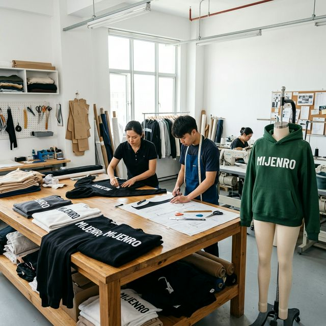

45+
Dedicated merchandisers
4
Primary garment categories
72h
Initial response window
Mijenro combines sourcing intelligence, product development, controlled production, and logistics management to help buyers scale without compromising quality.
Fabric mill matching, trim sourcing, and target-cost alignment for each category.
Prototype and fit sample management with structured revision tracking.
Managed allocation to vetted partner facilities with in-line QC gates.
Forwarder handover, document prep, and localized port staging solutions.
Adapted for wholesale programs requiring repeat quality at stable commercial lead times.
Incoming fabric and trims are checked against approved references.
T-shirts, polos, hoodies, sweatshirts, and knit bottoms for seasonal and evergreen lines.
Corporate uniforms, utility garments, and high-repeat reorder programs.
Age-segmented fits, labeling compliance support, and multi-pack retail programs.
Event-driven merchandise and campaign products with controlled lead times.
We map your category, volume, pricing, and compliance expectations before sampling starts.
Our team prepares development, production, and delivery windows with critical checkpoints.
Performance tracking supports reorder confidence and phased volume expansion.